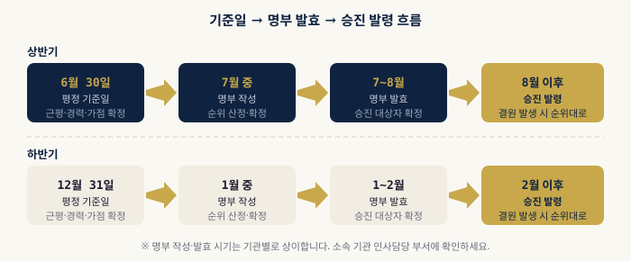

공무원 평정점수 순위 예측 가이드
— 내 명부 순위 추정하는 법
1 왜 순위 예측이 중요한가?
평정점수 자체가 높아도 경쟁자들과의 상대적 순위를 모르면 실제 승진 시기를 가늠하기 어렵습니다. 예를 들어 내 점수가 75점이라도 경쟁자 대부분이 76점 이상이라면 명부 하위권이 됩니다.
순위를 미리 추정해두면 가점 취득 우선순위 설정, 어학 성적 갱신 시기, 자격증 준비 일정 등을 전략적으로 결정할 수 있습니다.

2 평정점수 구성 요소별 점수 범위 이해
내 점수가 명부에서 어느 위치에 놓일지 가늠하려면 먼저 근평·경력·가점 세 영역이 실제 현장에서 형성하는 점수 분포 폭을 파악해야 합니다.
승진을 앞둔 경쟁자들은 현 직급에서 오래 근무해 경력평정이 만점(30점) 가까이 차는 경우가 많아, 총점은 대체로 80점대 후반~90점대 초반에 몰립니다. 이 좁은 구간에서 0.1~0.5점 차이로 여러 명의 순위가 갈리기 때문에, 가점 한 항목이 명부 순위에 큰 영향을 미칩니다.
3 내 순위 추정 5단계
최근 3년 연평균 결원: 4명/년
예상 대기 기간: 12 ÷ 4 = 약 3년
→ 현 시점에서 약 3년 후 승진 가능성
4 점수 1점 차이가 순위에 미치는 영향
경쟁자들의 점수가 밀집된 구간에서는 1점도 안 되는 차이가 여러 순위 차이를 만들 수 있습니다. 가점 항목을 하나라도 더 확보하는 것이 왜 중요한지 아래 사례로 확인하세요.
자격증 가점 0.5점 추가 → 총점 88.0점
→ 87.5점 초과 88.0점 미만인 경쟁자를 모두 앞지름
→ 그 구간에 4~5명이 있다면 추정 순위 약 17~18위로 상승
| 가점 추가 항목 | 점수 증가 | 순위 영향 (추정) |
|---|---|---|
| 해당계급 자격증 (경기·인천) | +0.5점 | 밀집 구간에서 5~10순위 상승 가능 |
| 해당계급 자격증 (서울시) | +0.24점 | 밀집 구간에서 2~5순위 상승 |
| TOEIC 900점 이상 어학 | +0.12점 | 1~3순위 상승 |
| 특수지 근무 가점 | 기관별 상이 | 점수와 인정 요건은 소속 기관 규칙 확인 |
5 상황별 순위 개선 시나리오
6 연간 결원(TO)과 승진 배수 읽는 법 — 내 승진 시기 역산하기
명부 순위를 추정했다면 다음 단계는 "우리 직렬·직급에서 1년에 몇 명이나 승진하는가(연간 결원)"를 파악해 내 예상 승진 시기를 역산하는 것입니다. 결원은 크게 4가지 요인에서 발생합니다.
① 정년퇴직·공로연수(퇴직준비교육): 가장 예측 정확도가 높은 결원입니다. 소속 기관 내부 행정망의 직원 명부나 최근 3년 정기인사 발령 공고를 보면 상·하반기 퇴직준비교육 진입 인원을 대략 가늠할 수 있습니다.
② 명예퇴직 및 상위직급 연쇄 승진: 5급(사무관) 자리가 1개 나면 6급→5급, 7급→6급, 8급→7급, 9급→8급으로 도미노 연쇄 결원이 생깁니다. 따라서 내 직급 결원만 보지 말고 바로 위 직급의 퇴직·파견 규모를 함께 봐야 정확합니다.
③ 조직개편·신설 부서 정원 증원: 지자체 조례(행정기구 설치 조례 및 정원 조례) 개정 입법예고를 보면 다음 반기 직급별 정원 증감 규모를 미리 파악할 수 있습니다.
승진임용 범위(배수)와 역산 공식 예시: 「지방공무원 임용령」 별표4에 따라 결원이 1명이면 7배수(1~7위), 2명이면 5배수(1~10위), 3명이면 4배수(1~12위), 4~5명이면 3배수, 6명 이상이면 2배수 안에 들어야 승진 심사 대상이 됩니다. 예를 들어 내 추정 순위가 15위이고 연간 평균 결원이 5명이라면, 이번 정기인사에서는 3배수(1~15위) 턱걸이로 심사 대상에 이름을 올리고, 약 2~3개 반기 뒤(1년~1년 6개월 후) 실질 승진권(1~5위)에 진입할 가능성이 높습니다. 이 기간 동안 가점 0.3~0.5점을 확보해 순위를 3~5계단만 끌어올려도 승진 시점을 반기 하나(6개월) 앞당길 수 있습니다.
내 평정점수를 먼저 정확히 계산하고 순위를 추정해보세요.
근평 등급·경력·가점을 모두 반영한 점수를 즉시 산출합니다.